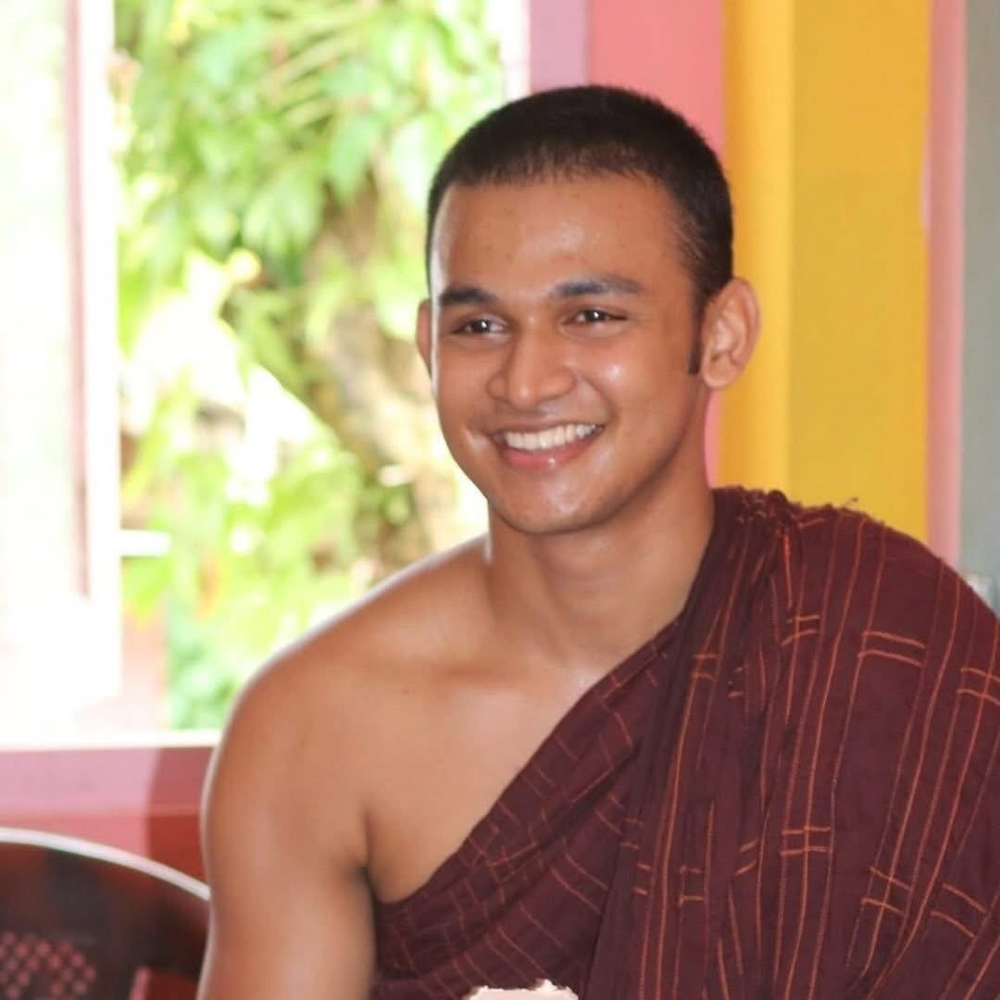

We are the English Dhamma Sunday School, operated by the English Dhamma Organisation. We provide Buddhist education based on the Sri Lankan English Dhamma School curriculum.
Our objective is to teach children in the English language, as many Sri Lankan children growing up in Australia are more comfortable communicating in English than Sinhala. Teaching in English helps students better understand and connect with Buddhist teachings in their daily lives.
The English Dhamma Organisation is guided by the vision of disseminating Buddhist knowledge in the English language to communities interested in learning the teachings of Lord Buddha.
Our goal is to build a strong and compassionate community while helping younger generations understand and appreciate Buddhist values and traditions.

Our Chief Incumbent is the Most Venerable Rev. Sewanagala Nandarathana Thero. He entered the monastic order at Siththamgalla Raja Maha Viharaya and pursued his higher studies under the guidance of the Most Venerable Agalabada Piyasiri Maha Nayaka thero and later stayed with Ven Seevali Thero in Ratnapura. After completing his higher education at the University of Kelaniya, he migrated to Australia and currently serves as the Chief Incumbent of the English Dhamma Temple located at 9 Beenak Road, Gembrook. The Thero is well known on YouTube, where several of his Dhamma sermons and teachings have reached millions of viewers worldwide. It is a great blessing and privilege for the students of our Sunday School to learn Buddhist doctrine under his guidance and benefit from his extensive knowledge of Buddhist philosophy and teachings.
Our President is Mrs. Janaki Rajaguru, the wife of well-known businessman Mr. Anura Bannaka who is a Graduate of Migration Law, completing her graduate degree in Univesrity Of Victoria University. Mrs. Rajaguru founded the English Dhamma Organisation with the vision of disseminating Buddhist teachings in the English language, particularly for the Sri Lankan community living in Australia. With a strong background and experience in Australian community and political engagement, Mrs. Rajaguru currently leads and manages the English Dhamma Organisation with great dedication and compassion. Under her leadership, the beautiful English Dhamma Temple, located on the scenic mountainside of Gembrook, was recently built and generously donated to the community. Known for her calm nature, leadership qualities, and excellent people-management skills, she has successfully organised many religious, cultural, and community events together with the members of the English Dhamma Organisation. Her vision is to make the teachings of Lord Buddha more accessible to people seeking Buddhist knowledge in English, especially the younger generation and Sunday School children who are more familiar with the English language.